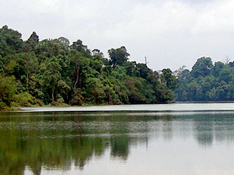

Nature

Central Catchment Nature Reserve
The largest nature reserve in Singapore, occupying 2880 hectares[1] Forming a large green lung in the geographical centre of the city, it houses several recreational sites, including the Singapore Zoo, the Night Safari and the River Safari, as well as several newer facilities built to encourage public appreciation of the reserve, such as the HSBC TreeTop Walk.
 CE1, DT16 :Bayfront
CE1, DT16 :Bayfront  How to get there
How to get there It was so huge.
It was so huge.
 Click here for more photos!
Click here for more photos!